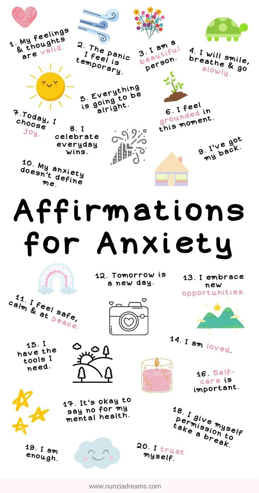

Understanding Mental Health Conditions
Anxiety
Anxiety disorders involve more than temporary worry or fear. They can interfere with daily activities such as job performance, school work, and relationships. Common symptoms include excessive worry, restlessness, fatigue, difficulty concentrating, and physical symptoms like a rapid heartbeat. Anxiety is treatable through therapy, medication, and stress management techniques.
THE difference BETWEEN Anxiety AND Depression